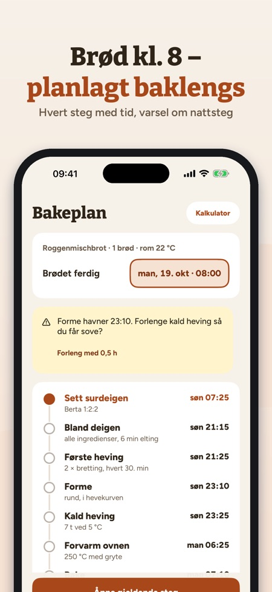
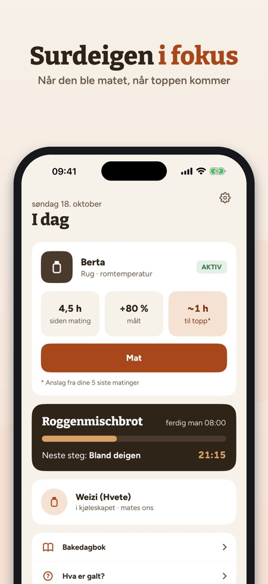
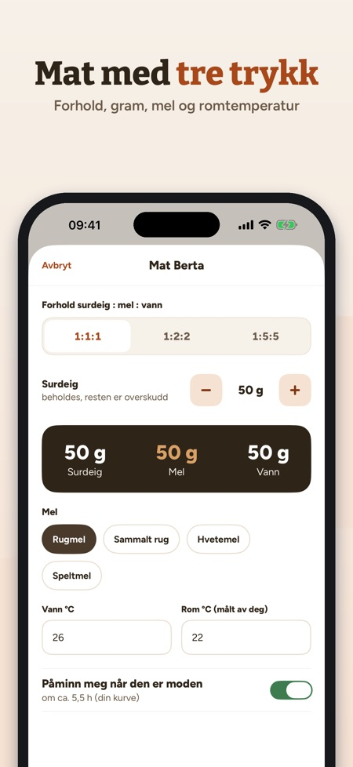

Mat surdeigen, planlegg bakst. Brødet ferdig kl. 8? Riseplan regner baklengs når du skal starte, blande og brette – og varsler hvis et steg havner midt på natten.



Surdeigvennen din: mat, planlegg, bak – alt i gram og °C.
SURDEIG
• Én eller flere surdeiger (rug, hvete, spelt) med alder og matinger
• Mat med tre trykk: forhold 1:1:1, 1:2:2 eller 1:5:5, gram, mel, vann- og romtemperatur (målt av deg)
• Påminnelse når surdeigen er moden – etter din egen kurve
• Kjøleskapsmodus med ukentlig påminnelse
HEVEKURVE
• Mål høyden etter matingen og se din egen kurve
• Snittid til toppen og største volum fra de siste matingene
• Hvor mye raskere surdeigen er i et varmere rom – fra dine egne data
BAKERPROSENT-KALKULATOR
• Deigvekt, hydrering, surdeig og salt → mel, vann, surdeig og salt i gram
• Melet og vannet i surdeigen regnes med
BAKEPLAN BAKLENGS
• Velg når brødet skal være ferdig – Riseplan regner ut hvert steg bakover
• Hevetidene tilpasses romtemperaturen din (merket som tommelfingerregel)
• Varsel hvis et håndgrep havner i hviletiden din, med forslag om lengre kald heving
• Påminnelse ved hvert steg
AKTIVT BAKESTEG
• Stor timer, teller for strekk og brett, neste steg i sikte
OPPSKRIFTER
• Grovbrød, Landbrot, Roggenmischbrot, Roggenbrot, Desembrood, Rågbröd/limpa, Rugbrød, Ruisleipä, pizza og pannekaker av overskuddssurdeig
• Melnavn fra ditt land (f.eks. hvetemel, sammalt rug)
BAKEDAGBOK OG HJELP
• Bilder, stjerner og notater til hvert brød
• Hva gjør du ved væske på toppen, svak heving, flatt brød eller for surt? Ved mugg: kast.
KJØP
Uten kjøp: én surdeig, mating, påminnelser, kalkulator og tre oppskrifter. Ett engangskjøp låser opp alt: flere surdeiger, hevekurve, bakeplan, aktivt bakesteg, alle oppskrifter og bakedagboken. Ikke abonnement, ingen reklame.
PERSONVERN
Dataene dine blir på enheten. Appen sender anonym bruksstatistikk via Google Analytics for Firebase (f.eks. hvilke skjermer og knapper som brukes, kjøp i appen og omtrentlig land); men bare hvis du slår det på ved oppstart eller i Innstillinger (av som standard).